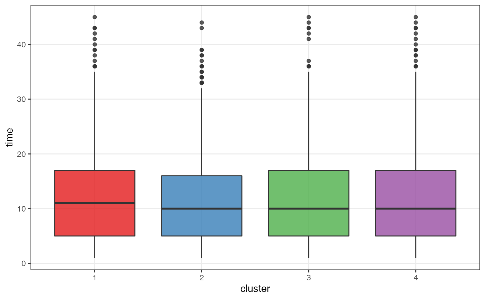
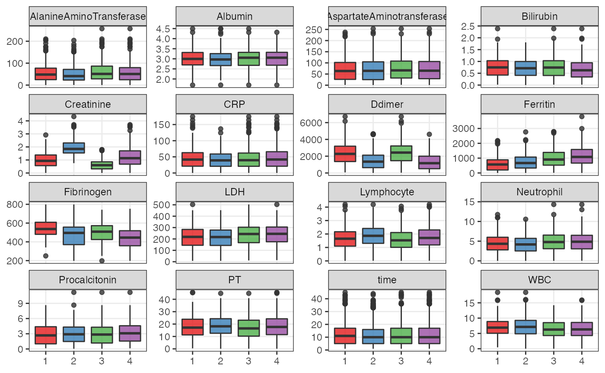
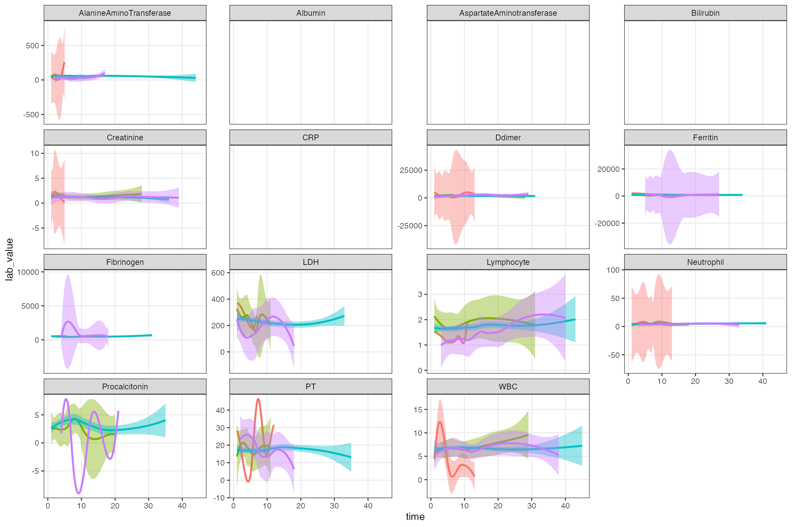

test.RmdIf your site is one of the “test” sites, please use this workflow to project the test observations onto the established topology (by loading centroids as shown below).
Parameters:
my_test <- 'test-data.csv'
data("centroids", package = 'tdapseudotime')Color palette for enrichment: blue > green > yellow > orange > red
and load the data exported from training, centroids.rda, which contains f_graph (igraph object), out_trajectories, and the centroids data frame.
# test_data <- read.csv(my_test, header = TRUE, colClasses = "character") %>%
# rename('covid_id' = patient_num,
# 'time' = days_since_admission)
# non_lab_value_names <- c('id', 'covid_id', 'day')
# lab_value_names <- setdiff(names(test_data), non_lab_value_names)
test_data <- read.csv(my_test, header = TRUE) %>%
widen_i2b2()
non_lab_value_names <- c('id', 'covid_id', 'CardiacTroponinHighSensitivity')
lab_value_names <- setdiff(names(test_data), non_lab_value_names)
processed_test <- mutate_at(test_data, dplyr::all_of(lab_value_names), as.numeric)
dim(processed_test)## [1] 3699 19
# processed_test <- test_data %>%
# group_by(covid_id) %>%
# ungroup() %>%
# mutate(id = as.integer(id),
# time = as.numeric(time)) %>%
# arrange(covid_id, time) %>%
# mutate_at(dplyr::all_of(lab_value_names), as.numeric) %>%
# arrange(as.numeric(covid_id), time) %>%
# {.}
mm <- 5
lab_values_mat <- processed_test[, lab_value_names] %>%
mice(m = mm, maxit = 25, meth = 'pmm', seed = 500) %>% # imputation
# complete(1) %>%
# scale() %>% # prepare for cosine similarity calculation
{.}##
## iter imp variable
## 1 1 AlanineAminoTransferase Albumin AspartateAminotransferase Bilirubin CRP Creatinine Ddimer Ferritin Fibrinogen LDH Lymphocyte Neutrophil Procalcitonin PT WBC
## 1 2 AlanineAminoTransferase Albumin AspartateAminotransferase Bilirubin CRP Creatinine Ddimer Ferritin Fibrinogen LDH Lymphocyte Neutrophil Procalcitonin PT WBC
## 1 3 AlanineAminoTransferase Albumin AspartateAminotransferase Bilirubin CRP Creatinine Ddimer Ferritin Fibrinogen LDH Lymphocyte Neutrophil Procalcitonin PT WBC
## 1 4 AlanineAminoTransferase Albumin AspartateAminotransferase Bilirubin CRP Creatinine Ddimer Ferritin Fibrinogen LDH Lymphocyte Neutrophil Procalcitonin PT WBC
## 1 5 AlanineAminoTransferase Albumin AspartateAminotransferase Bilirubin CRP Creatinine Ddimer Ferritin Fibrinogen LDH Lymphocyte Neutrophil Procalcitonin PT WBC
## 2 1 AlanineAminoTransferase Albumin AspartateAminotransferase Bilirubin CRP Creatinine Ddimer Ferritin Fibrinogen LDH Lymphocyte Neutrophil Procalcitonin PT WBC
## 2 2 AlanineAminoTransferase Albumin AspartateAminotransferase Bilirubin CRP Creatinine Ddimer Ferritin Fibrinogen LDH Lymphocyte Neutrophil Procalcitonin PT WBC
## 2 3 AlanineAminoTransferase Albumin AspartateAminotransferase Bilirubin CRP Creatinine Ddimer Ferritin Fibrinogen LDH Lymphocyte Neutrophil Procalcitonin PT WBC
## 2 4 AlanineAminoTransferase Albumin AspartateAminotransferase Bilirubin CRP Creatinine Ddimer Ferritin Fibrinogen LDH Lymphocyte Neutrophil Procalcitonin PT WBC
## 2 5 AlanineAminoTransferase Albumin AspartateAminotransferase Bilirubin CRP Creatinine Ddimer Ferritin Fibrinogen LDH Lymphocyte Neutrophil Procalcitonin PT WBC
## 3 1 AlanineAminoTransferase Albumin AspartateAminotransferase Bilirubin CRP Creatinine Ddimer Ferritin Fibrinogen LDH Lymphocyte Neutrophil Procalcitonin PT WBC
## 3 2 AlanineAminoTransferase Albumin AspartateAminotransferase Bilirubin CRP Creatinine Ddimer Ferritin Fibrinogen LDH Lymphocyte Neutrophil Procalcitonin PT WBC
## 3 3 AlanineAminoTransferase Albumin AspartateAminotransferase Bilirubin CRP Creatinine Ddimer Ferritin Fibrinogen LDH Lymphocyte Neutrophil Procalcitonin PT WBC
## 3 4 AlanineAminoTransferase Albumin AspartateAminotransferase Bilirubin CRP Creatinine Ddimer Ferritin Fibrinogen LDH Lymphocyte Neutrophil Procalcitonin PT WBC
## 3 5 AlanineAminoTransferase Albumin AspartateAminotransferase Bilirubin CRP Creatinine Ddimer Ferritin Fibrinogen LDH Lymphocyte Neutrophil Procalcitonin PT WBC
## 4 1 AlanineAminoTransferase Albumin AspartateAminotransferase Bilirubin CRP Creatinine Ddimer Ferritin Fibrinogen LDH Lymphocyte Neutrophil Procalcitonin PT WBC
## 4 2 AlanineAminoTransferase Albumin AspartateAminotransferase Bilirubin CRP Creatinine Ddimer Ferritin Fibrinogen LDH Lymphocyte Neutrophil Procalcitonin PT WBC
## 4 3 AlanineAminoTransferase Albumin AspartateAminotransferase Bilirubin CRP Creatinine Ddimer Ferritin Fibrinogen LDH Lymphocyte Neutrophil Procalcitonin PT WBC
## 4 4 AlanineAminoTransferase Albumin AspartateAminotransferase Bilirubin CRP Creatinine Ddimer Ferritin Fibrinogen LDH Lymphocyte Neutrophil Procalcitonin PT WBC
## 4 5 AlanineAminoTransferase Albumin AspartateAminotransferase Bilirubin CRP Creatinine Ddimer Ferritin Fibrinogen LDH Lymphocyte Neutrophil Procalcitonin PT WBC
## 5 1 AlanineAminoTransferase Albumin AspartateAminotransferase Bilirubin CRP Creatinine Ddimer Ferritin Fibrinogen LDH Lymphocyte Neutrophil Procalcitonin PT WBC
## 5 2 AlanineAminoTransferase Albumin AspartateAminotransferase Bilirubin CRP Creatinine Ddimer Ferritin Fibrinogen LDH Lymphocyte Neutrophil Procalcitonin PT WBC
## 5 3 AlanineAminoTransferase Albumin AspartateAminotransferase Bilirubin CRP Creatinine Ddimer Ferritin Fibrinogen LDH Lymphocyte Neutrophil Procalcitonin PT WBC
## 5 4 AlanineAminoTransferase Albumin AspartateAminotransferase Bilirubin CRP Creatinine Ddimer Ferritin Fibrinogen LDH Lymphocyte Neutrophil Procalcitonin PT WBC
## 5 5 AlanineAminoTransferase Albumin AspartateAminotransferase Bilirubin CRP Creatinine Ddimer Ferritin Fibrinogen LDH Lymphocyte Neutrophil Procalcitonin PT WBC
## 6 1 AlanineAminoTransferase Albumin AspartateAminotransferase Bilirubin CRP Creatinine Ddimer Ferritin Fibrinogen LDH Lymphocyte Neutrophil Procalcitonin PT WBC
## 6 2 AlanineAminoTransferase Albumin AspartateAminotransferase Bilirubin CRP Creatinine Ddimer Ferritin Fibrinogen LDH Lymphocyte Neutrophil Procalcitonin PT WBC
## 6 3 AlanineAminoTransferase Albumin AspartateAminotransferase Bilirubin CRP Creatinine Ddimer Ferritin Fibrinogen LDH Lymphocyte Neutrophil Procalcitonin PT WBC
## 6 4 AlanineAminoTransferase Albumin AspartateAminotransferase Bilirubin CRP Creatinine Ddimer Ferritin Fibrinogen LDH Lymphocyte Neutrophil Procalcitonin PT WBC
## 6 5 AlanineAminoTransferase Albumin AspartateAminotransferase Bilirubin CRP Creatinine Ddimer Ferritin Fibrinogen LDH Lymphocyte Neutrophil Procalcitonin PT WBC
## 7 1 AlanineAminoTransferase Albumin AspartateAminotransferase Bilirubin CRP Creatinine Ddimer Ferritin Fibrinogen LDH Lymphocyte Neutrophil Procalcitonin PT WBC
## 7 2 AlanineAminoTransferase Albumin AspartateAminotransferase Bilirubin CRP Creatinine Ddimer Ferritin Fibrinogen LDH Lymphocyte Neutrophil Procalcitonin PT WBC
## 7 3 AlanineAminoTransferase Albumin AspartateAminotransferase Bilirubin CRP Creatinine Ddimer Ferritin Fibrinogen LDH Lymphocyte Neutrophil Procalcitonin PT WBC
## 7 4 AlanineAminoTransferase Albumin AspartateAminotransferase Bilirubin CRP Creatinine Ddimer Ferritin Fibrinogen LDH Lymphocyte Neutrophil Procalcitonin PT WBC
## 7 5 AlanineAminoTransferase Albumin AspartateAminotransferase Bilirubin CRP Creatinine Ddimer Ferritin Fibrinogen LDH Lymphocyte Neutrophil Procalcitonin PT WBC
## 8 1 AlanineAminoTransferase Albumin AspartateAminotransferase Bilirubin CRP Creatinine Ddimer Ferritin Fibrinogen LDH Lymphocyte Neutrophil Procalcitonin PT WBC
## 8 2 AlanineAminoTransferase Albumin AspartateAminotransferase Bilirubin CRP Creatinine Ddimer Ferritin Fibrinogen LDH Lymphocyte Neutrophil Procalcitonin PT WBC
## 8 3 AlanineAminoTransferase Albumin AspartateAminotransferase Bilirubin CRP Creatinine Ddimer Ferritin Fibrinogen LDH Lymphocyte Neutrophil Procalcitonin PT WBC
## 8 4 AlanineAminoTransferase Albumin AspartateAminotransferase Bilirubin CRP Creatinine Ddimer Ferritin Fibrinogen LDH Lymphocyte Neutrophil Procalcitonin PT WBC
## 8 5 AlanineAminoTransferase Albumin AspartateAminotransferase Bilirubin CRP Creatinine Ddimer Ferritin Fibrinogen LDH Lymphocyte Neutrophil Procalcitonin PT WBC
## 9 1 AlanineAminoTransferase Albumin AspartateAminotransferase Bilirubin CRP Creatinine Ddimer Ferritin Fibrinogen LDH Lymphocyte Neutrophil Procalcitonin PT WBC
## 9 2 AlanineAminoTransferase Albumin AspartateAminotransferase Bilirubin CRP Creatinine Ddimer Ferritin Fibrinogen LDH Lymphocyte Neutrophil Procalcitonin PT WBC
## 9 3 AlanineAminoTransferase Albumin AspartateAminotransferase Bilirubin CRP Creatinine Ddimer Ferritin Fibrinogen LDH Lymphocyte Neutrophil Procalcitonin PT WBC
## 9 4 AlanineAminoTransferase Albumin AspartateAminotransferase Bilirubin CRP Creatinine Ddimer Ferritin Fibrinogen LDH Lymphocyte Neutrophil Procalcitonin PT WBC
## 9 5 AlanineAminoTransferase Albumin AspartateAminotransferase Bilirubin CRP Creatinine Ddimer Ferritin Fibrinogen LDH Lymphocyte Neutrophil Procalcitonin PT WBC
## 10 1 AlanineAminoTransferase Albumin AspartateAminotransferase Bilirubin CRP Creatinine Ddimer Ferritin Fibrinogen LDH Lymphocyte Neutrophil Procalcitonin PT WBC
## 10 2 AlanineAminoTransferase Albumin AspartateAminotransferase Bilirubin CRP Creatinine Ddimer Ferritin Fibrinogen LDH Lymphocyte Neutrophil Procalcitonin PT WBC
## 10 3 AlanineAminoTransferase Albumin AspartateAminotransferase Bilirubin CRP Creatinine Ddimer Ferritin Fibrinogen LDH Lymphocyte Neutrophil Procalcitonin PT WBC
## 10 4 AlanineAminoTransferase Albumin AspartateAminotransferase Bilirubin CRP Creatinine Ddimer Ferritin Fibrinogen LDH Lymphocyte Neutrophil Procalcitonin PT WBC
## 10 5 AlanineAminoTransferase Albumin AspartateAminotransferase Bilirubin CRP Creatinine Ddimer Ferritin Fibrinogen LDH Lymphocyte Neutrophil Procalcitonin PT WBC
## 11 1 AlanineAminoTransferase Albumin AspartateAminotransferase Bilirubin CRP Creatinine Ddimer Ferritin Fibrinogen LDH Lymphocyte Neutrophil Procalcitonin PT WBC
## 11 2 AlanineAminoTransferase Albumin AspartateAminotransferase Bilirubin CRP Creatinine Ddimer Ferritin Fibrinogen LDH Lymphocyte Neutrophil Procalcitonin PT WBC
## 11 3 AlanineAminoTransferase Albumin AspartateAminotransferase Bilirubin CRP Creatinine Ddimer Ferritin Fibrinogen LDH Lymphocyte Neutrophil Procalcitonin PT WBC
## 11 4 AlanineAminoTransferase Albumin AspartateAminotransferase Bilirubin CRP Creatinine Ddimer Ferritin Fibrinogen LDH Lymphocyte Neutrophil Procalcitonin PT WBC
## 11 5 AlanineAminoTransferase Albumin AspartateAminotransferase Bilirubin CRP Creatinine Ddimer Ferritin Fibrinogen LDH Lymphocyte Neutrophil Procalcitonin PT WBC
## 12 1 AlanineAminoTransferase Albumin AspartateAminotransferase Bilirubin CRP Creatinine Ddimer Ferritin Fibrinogen LDH Lymphocyte Neutrophil Procalcitonin PT WBC
## 12 2 AlanineAminoTransferase Albumin AspartateAminotransferase Bilirubin CRP Creatinine Ddimer Ferritin Fibrinogen LDH Lymphocyte Neutrophil Procalcitonin PT WBC
## 12 3 AlanineAminoTransferase Albumin AspartateAminotransferase Bilirubin CRP Creatinine Ddimer Ferritin Fibrinogen LDH Lymphocyte Neutrophil Procalcitonin PT WBC
## 12 4 AlanineAminoTransferase Albumin AspartateAminotransferase Bilirubin CRP Creatinine Ddimer Ferritin Fibrinogen LDH Lymphocyte Neutrophil Procalcitonin PT WBC
## 12 5 AlanineAminoTransferase Albumin AspartateAminotransferase Bilirubin CRP Creatinine Ddimer Ferritin Fibrinogen LDH Lymphocyte Neutrophil Procalcitonin PT WBC
## 13 1 AlanineAminoTransferase Albumin AspartateAminotransferase Bilirubin CRP Creatinine Ddimer Ferritin Fibrinogen LDH Lymphocyte Neutrophil Procalcitonin PT WBC
## 13 2 AlanineAminoTransferase Albumin AspartateAminotransferase Bilirubin CRP Creatinine Ddimer Ferritin Fibrinogen LDH Lymphocyte Neutrophil Procalcitonin PT WBC
## 13 3 AlanineAminoTransferase Albumin AspartateAminotransferase Bilirubin CRP Creatinine Ddimer Ferritin Fibrinogen LDH Lymphocyte Neutrophil Procalcitonin PT WBC
## 13 4 AlanineAminoTransferase Albumin AspartateAminotransferase Bilirubin CRP Creatinine Ddimer Ferritin Fibrinogen LDH Lymphocyte Neutrophil Procalcitonin PT WBC
## 13 5 AlanineAminoTransferase Albumin AspartateAminotransferase Bilirubin CRP Creatinine Ddimer Ferritin Fibrinogen LDH Lymphocyte Neutrophil Procalcitonin PT WBC
## 14 1 AlanineAminoTransferase Albumin AspartateAminotransferase Bilirubin CRP Creatinine Ddimer Ferritin Fibrinogen LDH Lymphocyte Neutrophil Procalcitonin PT WBC
## 14 2 AlanineAminoTransferase Albumin AspartateAminotransferase Bilirubin CRP Creatinine Ddimer Ferritin Fibrinogen LDH Lymphocyte Neutrophil Procalcitonin PT WBC
## 14 3 AlanineAminoTransferase Albumin AspartateAminotransferase Bilirubin CRP Creatinine Ddimer Ferritin Fibrinogen LDH Lymphocyte Neutrophil Procalcitonin PT WBC
## 14 4 AlanineAminoTransferase Albumin AspartateAminotransferase Bilirubin CRP Creatinine Ddimer Ferritin Fibrinogen LDH Lymphocyte Neutrophil Procalcitonin PT WBC
## 14 5 AlanineAminoTransferase Albumin AspartateAminotransferase Bilirubin CRP Creatinine Ddimer Ferritin Fibrinogen LDH Lymphocyte Neutrophil Procalcitonin PT WBC
## 15 1 AlanineAminoTransferase Albumin AspartateAminotransferase Bilirubin CRP Creatinine Ddimer Ferritin Fibrinogen LDH Lymphocyte Neutrophil Procalcitonin PT WBC
## 15 2 AlanineAminoTransferase Albumin AspartateAminotransferase Bilirubin CRP Creatinine Ddimer Ferritin Fibrinogen LDH Lymphocyte Neutrophil Procalcitonin PT WBC
## 15 3 AlanineAminoTransferase Albumin AspartateAminotransferase Bilirubin CRP Creatinine Ddimer Ferritin Fibrinogen LDH Lymphocyte Neutrophil Procalcitonin PT WBC
## 15 4 AlanineAminoTransferase Albumin AspartateAminotransferase Bilirubin CRP Creatinine Ddimer Ferritin Fibrinogen LDH Lymphocyte Neutrophil Procalcitonin PT WBC
## 15 5 AlanineAminoTransferase Albumin AspartateAminotransferase Bilirubin CRP Creatinine Ddimer Ferritin Fibrinogen LDH Lymphocyte Neutrophil Procalcitonin PT WBC
## 16 1 AlanineAminoTransferase Albumin AspartateAminotransferase Bilirubin CRP Creatinine Ddimer Ferritin Fibrinogen LDH Lymphocyte Neutrophil Procalcitonin PT WBC
## 16 2 AlanineAminoTransferase Albumin AspartateAminotransferase Bilirubin CRP Creatinine Ddimer Ferritin Fibrinogen LDH Lymphocyte Neutrophil Procalcitonin PT WBC
## 16 3 AlanineAminoTransferase Albumin AspartateAminotransferase Bilirubin CRP Creatinine Ddimer Ferritin Fibrinogen LDH Lymphocyte Neutrophil Procalcitonin PT WBC
## 16 4 AlanineAminoTransferase Albumin AspartateAminotransferase Bilirubin CRP Creatinine Ddimer Ferritin Fibrinogen LDH Lymphocyte Neutrophil Procalcitonin PT WBC
## 16 5 AlanineAminoTransferase Albumin AspartateAminotransferase Bilirubin CRP Creatinine Ddimer Ferritin Fibrinogen LDH Lymphocyte Neutrophil Procalcitonin PT WBC
## 17 1 AlanineAminoTransferase Albumin AspartateAminotransferase Bilirubin CRP Creatinine Ddimer Ferritin Fibrinogen LDH Lymphocyte Neutrophil Procalcitonin PT WBC
## 17 2 AlanineAminoTransferase Albumin AspartateAminotransferase Bilirubin CRP Creatinine Ddimer Ferritin Fibrinogen LDH Lymphocyte Neutrophil Procalcitonin PT WBC
## 17 3 AlanineAminoTransferase Albumin AspartateAminotransferase Bilirubin CRP Creatinine Ddimer Ferritin Fibrinogen LDH Lymphocyte Neutrophil Procalcitonin PT WBC
## 17 4 AlanineAminoTransferase Albumin AspartateAminotransferase Bilirubin CRP Creatinine Ddimer Ferritin Fibrinogen LDH Lymphocyte Neutrophil Procalcitonin PT WBC
## 17 5 AlanineAminoTransferase Albumin AspartateAminotransferase Bilirubin CRP Creatinine Ddimer Ferritin Fibrinogen LDH Lymphocyte Neutrophil Procalcitonin PT WBC
## 18 1 AlanineAminoTransferase Albumin AspartateAminotransferase Bilirubin CRP Creatinine Ddimer Ferritin Fibrinogen LDH Lymphocyte Neutrophil Procalcitonin PT WBC
## 18 2 AlanineAminoTransferase Albumin AspartateAminotransferase Bilirubin CRP Creatinine Ddimer Ferritin Fibrinogen LDH Lymphocyte Neutrophil Procalcitonin PT WBC
## 18 3 AlanineAminoTransferase Albumin AspartateAminotransferase Bilirubin CRP Creatinine Ddimer Ferritin Fibrinogen LDH Lymphocyte Neutrophil Procalcitonin PT WBC
## 18 4 AlanineAminoTransferase Albumin AspartateAminotransferase Bilirubin CRP Creatinine Ddimer Ferritin Fibrinogen LDH Lymphocyte Neutrophil Procalcitonin PT WBC
## 18 5 AlanineAminoTransferase Albumin AspartateAminotransferase Bilirubin CRP Creatinine Ddimer Ferritin Fibrinogen LDH Lymphocyte Neutrophil Procalcitonin PT WBC
## 19 1 AlanineAminoTransferase Albumin AspartateAminotransferase Bilirubin CRP Creatinine Ddimer Ferritin Fibrinogen LDH Lymphocyte Neutrophil Procalcitonin PT WBC
## 19 2 AlanineAminoTransferase Albumin AspartateAminotransferase Bilirubin CRP Creatinine Ddimer Ferritin Fibrinogen LDH Lymphocyte Neutrophil Procalcitonin PT WBC
## 19 3 AlanineAminoTransferase Albumin AspartateAminotransferase Bilirubin CRP Creatinine Ddimer Ferritin Fibrinogen LDH Lymphocyte Neutrophil Procalcitonin PT WBC
## 19 4 AlanineAminoTransferase Albumin AspartateAminotransferase Bilirubin CRP Creatinine Ddimer Ferritin Fibrinogen LDH Lymphocyte Neutrophil Procalcitonin PT WBC
## 19 5 AlanineAminoTransferase Albumin AspartateAminotransferase Bilirubin CRP Creatinine Ddimer Ferritin Fibrinogen LDH Lymphocyte Neutrophil Procalcitonin PT WBC
## 20 1 AlanineAminoTransferase Albumin AspartateAminotransferase Bilirubin CRP Creatinine Ddimer Ferritin Fibrinogen LDH Lymphocyte Neutrophil Procalcitonin PT WBC
## 20 2 AlanineAminoTransferase Albumin AspartateAminotransferase Bilirubin CRP Creatinine Ddimer Ferritin Fibrinogen LDH Lymphocyte Neutrophil Procalcitonin PT WBC
## 20 3 AlanineAminoTransferase Albumin AspartateAminotransferase Bilirubin CRP Creatinine Ddimer Ferritin Fibrinogen LDH Lymphocyte Neutrophil Procalcitonin PT WBC
## 20 4 AlanineAminoTransferase Albumin AspartateAminotransferase Bilirubin CRP Creatinine Ddimer Ferritin Fibrinogen LDH Lymphocyte Neutrophil Procalcitonin PT WBC
## 20 5 AlanineAminoTransferase Albumin AspartateAminotransferase Bilirubin CRP Creatinine Ddimer Ferritin Fibrinogen LDH Lymphocyte Neutrophil Procalcitonin PT WBC
## 21 1 AlanineAminoTransferase Albumin AspartateAminotransferase Bilirubin CRP Creatinine Ddimer Ferritin Fibrinogen LDH Lymphocyte Neutrophil Procalcitonin PT WBC
## 21 2 AlanineAminoTransferase Albumin AspartateAminotransferase Bilirubin CRP Creatinine Ddimer Ferritin Fibrinogen LDH Lymphocyte Neutrophil Procalcitonin PT WBC
## 21 3 AlanineAminoTransferase Albumin AspartateAminotransferase Bilirubin CRP Creatinine Ddimer Ferritin Fibrinogen LDH Lymphocyte Neutrophil Procalcitonin PT WBC
## 21 4 AlanineAminoTransferase Albumin AspartateAminotransferase Bilirubin CRP Creatinine Ddimer Ferritin Fibrinogen LDH Lymphocyte Neutrophil Procalcitonin PT WBC
## 21 5 AlanineAminoTransferase Albumin AspartateAminotransferase Bilirubin CRP Creatinine Ddimer Ferritin Fibrinogen LDH Lymphocyte Neutrophil Procalcitonin PT WBC
## 22 1 AlanineAminoTransferase Albumin AspartateAminotransferase Bilirubin CRP Creatinine Ddimer Ferritin Fibrinogen LDH Lymphocyte Neutrophil Procalcitonin PT WBC
## 22 2 AlanineAminoTransferase Albumin AspartateAminotransferase Bilirubin CRP Creatinine Ddimer Ferritin Fibrinogen LDH Lymphocyte Neutrophil Procalcitonin PT WBC
## 22 3 AlanineAminoTransferase Albumin AspartateAminotransferase Bilirubin CRP Creatinine Ddimer Ferritin Fibrinogen LDH Lymphocyte Neutrophil Procalcitonin PT WBC
## 22 4 AlanineAminoTransferase Albumin AspartateAminotransferase Bilirubin CRP Creatinine Ddimer Ferritin Fibrinogen LDH Lymphocyte Neutrophil Procalcitonin PT WBC
## 22 5 AlanineAminoTransferase Albumin AspartateAminotransferase Bilirubin CRP Creatinine Ddimer Ferritin Fibrinogen LDH Lymphocyte Neutrophil Procalcitonin PT WBC
## 23 1 AlanineAminoTransferase Albumin AspartateAminotransferase Bilirubin CRP Creatinine Ddimer Ferritin Fibrinogen LDH Lymphocyte Neutrophil Procalcitonin PT WBC
## 23 2 AlanineAminoTransferase Albumin AspartateAminotransferase Bilirubin CRP Creatinine Ddimer Ferritin Fibrinogen LDH Lymphocyte Neutrophil Procalcitonin PT WBC
## 23 3 AlanineAminoTransferase Albumin AspartateAminotransferase Bilirubin CRP Creatinine Ddimer Ferritin Fibrinogen LDH Lymphocyte Neutrophil Procalcitonin PT WBC
## 23 4 AlanineAminoTransferase Albumin AspartateAminotransferase Bilirubin CRP Creatinine Ddimer Ferritin Fibrinogen LDH Lymphocyte Neutrophil Procalcitonin PT WBC
## 23 5 AlanineAminoTransferase Albumin AspartateAminotransferase Bilirubin CRP Creatinine Ddimer Ferritin Fibrinogen LDH Lymphocyte Neutrophil Procalcitonin PT WBC
## 24 1 AlanineAminoTransferase Albumin AspartateAminotransferase Bilirubin CRP Creatinine Ddimer Ferritin Fibrinogen LDH Lymphocyte Neutrophil Procalcitonin PT WBC
## 24 2 AlanineAminoTransferase Albumin AspartateAminotransferase Bilirubin CRP Creatinine Ddimer Ferritin Fibrinogen LDH Lymphocyte Neutrophil Procalcitonin PT WBC
## 24 3 AlanineAminoTransferase Albumin AspartateAminotransferase Bilirubin CRP Creatinine Ddimer Ferritin Fibrinogen LDH Lymphocyte Neutrophil Procalcitonin PT WBC
## 24 4 AlanineAminoTransferase Albumin AspartateAminotransferase Bilirubin CRP Creatinine Ddimer Ferritin Fibrinogen LDH Lymphocyte Neutrophil Procalcitonin PT WBC
## 24 5 AlanineAminoTransferase Albumin AspartateAminotransferase Bilirubin CRP Creatinine Ddimer Ferritin Fibrinogen LDH Lymphocyte Neutrophil Procalcitonin PT WBC
## 25 1 AlanineAminoTransferase Albumin AspartateAminotransferase Bilirubin CRP Creatinine Ddimer Ferritin Fibrinogen LDH Lymphocyte Neutrophil Procalcitonin PT WBC
## 25 2 AlanineAminoTransferase Albumin AspartateAminotransferase Bilirubin CRP Creatinine Ddimer Ferritin Fibrinogen LDH Lymphocyte Neutrophil Procalcitonin PT WBC
## 25 3 AlanineAminoTransferase Albumin AspartateAminotransferase Bilirubin CRP Creatinine Ddimer Ferritin Fibrinogen LDH Lymphocyte Neutrophil Procalcitonin PT WBC
## 25 4 AlanineAminoTransferase Albumin AspartateAminotransferase Bilirubin CRP Creatinine Ddimer Ferritin Fibrinogen LDH Lymphocyte Neutrophil Procalcitonin PT WBC
## 25 5 AlanineAminoTransferase Albumin AspartateAminotransferase Bilirubin CRP Creatinine Ddimer Ferritin Fibrinogen LDH Lymphocyte Neutrophil Procalcitonin PT WBC
lab_values_mat <- lapply(1:mm, function(x) complete(lab_values_mat, x)) %>%
do.call(rbind, .) %>%
as.matrix() %>%
scale()
projection_mat <- cosine_sim_func(
lab_values_mat,
as.matrix(select(centroids, - c(node, CardiacTroponinHighSensitivity))))
id_to_node <- data.frame(
id = processed_test$id,
node = apply(projection_mat, 1, which.max)
)
mapped_test <- processed_test %>%
select(- any_of(lab_value_names)) %>%
left_join(id_to_node, by = 'id') %>%
arrange(id)
out_test_list <- compute_similarity(mapped_test, node_color, out_trajectories)## trajElmnts clusterTraj
## 1 3 2 1 7 13 14 15 16 17 18 1>2
## 2 4 5 11 12 18 2
## 3 6 12 18 2
## 4 8 9 10 16 17 18 1>2
## 5 20 19 25 31 32 33 34 35 36 30 24 18 3>4>2
## 6 21 27 26 25 31 32 33 34 35 36 30 24 18 3>4>2
## 7 23 22 28 27 26 25 31 32 33 34 35 36 30 24 18 4>3>4>2
## 8 29 28 27 26 25 31 32 33 34 35 36 30 24 18 4>3>4>2
similarity_test <- out_test_list[[1]]
id_node_cluster_test <- out_test_list[[2]]
most_similar_traj_test <- similarity_test %>%
group_by(covid_id) %>%
slice(which.max(SJ)) # use Jaccard similarity
head(most_similar_traj_test, 10)## # A tibble: 10 x 11
## # Groups: covid_id [10]
## covid_id trajPaz trajPazclusters trajNumb trajElmnts trajLenght SJ SI
## <int> <chr> <chr> <int> <chr> <int> <dbl> <dbl>
## 1 1 31 36 … 3 4 1 2 5 20 19 25 … 12 0.278 0.143
## 2 4 6 34 3… 2 4 1 3 5 20 19 25 … 12 0.3 0.105
## 3 5 7 1 6 … 1 2 4 3 5 20 19 25 … 12 0.4 0.0860
## 4 9 6 31 1… 2 3 1 4 5 20 19 25 … 12 0.368 0.0921
## 5 10 36 6 3… 4 2 3 1 5 20 19 25 … 12 0.421 0.121
## 6 13 25 36 … 3 4 1 2 5 20 19 25 … 12 0.3 0.0833
## 7 16 24 1 3… 4 1 2 3 8 29 28 27 … 14 0.318 0.0909
## 8 23 25 36 … 3 4 2 1 3 6 12 18 3 0.222 0.111
## 9 28 36 31 … 4 3 2 1 3 6 12 18 3 0.2 0.0625
## 10 29 13 31 … 1 3 2 4 1 3 2 1 7 1… 10 0.25 0.103
## # … with 3 more variables: SL <dbl>, JW <dbl>, clusterTraj <chr>##
## 1>2 2 3>4>2 4>3>4>2
## 3 17 259 10
plot_dat <- processed_test %>%
left_join(id_node_cluster_test %>% distinct(covid_id, id, cluster),
by = c('id', 'covid_id'))
plot_dat %>%
ggplot(aes(x = cluster, y = time, fill = cluster)) +
geom_boxplot(alpha = 0.8) +
scale_fill_manual(values = clust_colors) +
scale_color_manual(values = clust_colors) +
theme(legend.position = "none",
plot.title = element_text(size = 8, hjust = 0.5))
plot_dat %>%
select(cluster, all_of(lab_value_names)) %>%
pivot_longer(- cluster, names_to = 'Lab', values_to = 'lab_value') %>%
ggplot(aes(x = cluster, y = lab_value, fill = cluster)) +
geom_boxplot(alpha = 0.8) +
labs(x = NULL, y = NULL) +
scale_fill_manual(values = clust_colors) +
scale_color_manual(values = clust_colors) +
theme(legend.position = "none") +
facet_wrap(~ Lab, scales = 'free_y')## Warning: Removed 138197 rows containing non-finite values (stat_boxplot).
processed_data_traj <- processed_test %>%
left_join(most_similar_traj_test, by = c("covid_id")) %>%
mutate(clusterTraj = as.factor(clusterTraj), time) %>%
select(time, clusterTraj, all_of(lab_value_names)) %>%
distinct()
processed_data_traj %>%
pivot_longer(- c(time, clusterTraj),
names_to = 'Lab', values_to = 'lab_value') %>%
ggplot(aes(time, lab_value, colour = clusterTraj,
group = clusterTraj, fill = clusterTraj)) +
geom_smooth(method = "loess") +
theme(legend.position = "none") +
facet_wrap(~ Lab, scales = 'free_y')## `geom_smooth()` using formula 'y ~ x'## Warning: Removed 49046 rows containing non-finite values (stat_smooth).## Warning in simpleLoess(y, x, w, span, degree = degree, parametric =
## parametric, : span too small. fewer data values than degrees of freedom.## Warning in simpleLoess(y, x, w, span, degree = degree, parametric =
## parametric, : pseudoinverse used at 0.98## Warning in simpleLoess(y, x, w, span, degree = degree, parametric =
## parametric, : neighborhood radius 3.02## Warning in simpleLoess(y, x, w, span, degree = degree, parametric =
## parametric, : reciprocal condition number 0## Warning in simpleLoess(y, x, w, span, degree = degree, parametric =
## parametric, : There are other near singularities as well. 16.16## Warning in predLoess(object$y, object$x, newx = if
## (is.null(newdata)) object$x else if (is.data.frame(newdata))
## as.matrix(model.frame(delete.response(terms(object)), : span too small. fewer
## data values than degrees of freedom.## Warning in predLoess(object$y, object$x, newx = if
## (is.null(newdata)) object$x else if (is.data.frame(newdata))
## as.matrix(model.frame(delete.response(terms(object)), : pseudoinverse used at
## 0.98## Warning in predLoess(object$y, object$x, newx = if
## (is.null(newdata)) object$x else if (is.data.frame(newdata))
## as.matrix(model.frame(delete.response(terms(object)), : neighborhood radius 3.02## Warning in predLoess(object$y, object$x, newx = if
## (is.null(newdata)) object$x else if (is.data.frame(newdata))
## as.matrix(model.frame(delete.response(terms(object)), : reciprocal condition
## number 0## Warning in predLoess(object$y, object$x, newx = if
## (is.null(newdata)) object$x else if (is.data.frame(newdata))
## as.matrix(model.frame(delete.response(terms(object)), : There are other near
## singularities as well. 16.16## Warning in simpleLoess(y, x, w, span, degree = degree, parametric =
## parametric, : span too small. fewer data values than degrees of freedom.## Warning in simpleLoess(y, x, w, span, degree = degree, parametric =
## parametric, : at 0.98## Warning in simpleLoess(y, x, w, span, degree = degree, parametric =
## parametric, : radius 0.0004## Warning in simpleLoess(y, x, w, span, degree = degree, parametric =
## parametric, : all data on boundary of neighborhood. make span bigger## Warning in simpleLoess(y, x, w, span, degree = degree, parametric =
## parametric, : pseudoinverse used at 0.98## Warning in simpleLoess(y, x, w, span, degree = degree, parametric =
## parametric, : neighborhood radius 0.02## Warning in simpleLoess(y, x, w, span, degree = degree, parametric =
## parametric, : reciprocal condition number 1## Warning in simpleLoess(y, x, w, span, degree = degree, parametric =
## parametric, : at 5.02## Warning in simpleLoess(y, x, w, span, degree = degree, parametric =
## parametric, : radius 0.0004## Warning in simpleLoess(y, x, w, span, degree = degree, parametric =
## parametric, : all data on boundary of neighborhood. make span bigger## Warning in simpleLoess(y, x, w, span, degree = degree, parametric =
## parametric, : There are other near singularities as well. 0.0004## Warning in simpleLoess(y, x, w, span, degree = degree, parametric =
## parametric, : zero-width neighborhood. make span bigger
## Warning in simpleLoess(y, x, w, span, degree = degree, parametric =
## parametric, : zero-width neighborhood. make span bigger## Warning: Computation failed in `stat_smooth()`:
## NA/NaN/Inf in foreign function call (arg 5)## Warning in simpleLoess(y, x, w, span, degree = degree, parametric =
## parametric, : span too small. fewer data values than degrees of freedom.## Warning in simpleLoess(y, x, w, span, degree = degree, parametric =
## parametric, : at 0.945## Warning in simpleLoess(y, x, w, span, degree = degree, parametric =
## parametric, : radius 0.003025## Warning in simpleLoess(y, x, w, span, degree = degree, parametric =
## parametric, : all data on boundary of neighborhood. make span bigger## Warning in simpleLoess(y, x, w, span, degree = degree, parametric =
## parametric, : pseudoinverse used at 0.945## Warning in simpleLoess(y, x, w, span, degree = degree, parametric =
## parametric, : neighborhood radius 0.055## Warning in simpleLoess(y, x, w, span, degree = degree, parametric =
## parametric, : reciprocal condition number 1## Warning in simpleLoess(y, x, w, span, degree = degree, parametric =
## parametric, : at 12.055## Warning in simpleLoess(y, x, w, span, degree = degree, parametric =
## parametric, : radius 0.003025## Warning in simpleLoess(y, x, w, span, degree = degree, parametric =
## parametric, : all data on boundary of neighborhood. make span bigger## Warning in simpleLoess(y, x, w, span, degree = degree, parametric =
## parametric, : There are other near singularities as well. 0.003025## Warning in simpleLoess(y, x, w, span, degree = degree, parametric =
## parametric, : zero-width neighborhood. make span bigger
## Warning in simpleLoess(y, x, w, span, degree = degree, parametric =
## parametric, : zero-width neighborhood. make span bigger## Warning: Computation failed in `stat_smooth()`:
## NA/NaN/Inf in foreign function call (arg 5)## Warning in simpleLoess(y, x, w, span, degree = degree, parametric =
## parametric, : span too small. fewer data values than degrees of freedom.## Warning in simpleLoess(y, x, w, span, degree = degree, parametric =
## parametric, : at 0.945## Warning in simpleLoess(y, x, w, span, degree = degree, parametric =
## parametric, : radius 0.003025## Warning in simpleLoess(y, x, w, span, degree = degree, parametric =
## parametric, : all data on boundary of neighborhood. make span bigger## Warning in simpleLoess(y, x, w, span, degree = degree, parametric =
## parametric, : pseudoinverse used at 0.945## Warning in simpleLoess(y, x, w, span, degree = degree, parametric =
## parametric, : neighborhood radius 0.055## Warning in simpleLoess(y, x, w, span, degree = degree, parametric =
## parametric, : reciprocal condition number 1## Warning in simpleLoess(y, x, w, span, degree = degree, parametric =
## parametric, : at 12.055## Warning in simpleLoess(y, x, w, span, degree = degree, parametric =
## parametric, : radius 0.003025## Warning in simpleLoess(y, x, w, span, degree = degree, parametric =
## parametric, : all data on boundary of neighborhood. make span bigger## Warning in simpleLoess(y, x, w, span, degree = degree, parametric =
## parametric, : There are other near singularities as well. 0.003025## Warning in simpleLoess(y, x, w, span, degree = degree, parametric =
## parametric, : zero-width neighborhood. make span bigger
## Warning in simpleLoess(y, x, w, span, degree = degree, parametric =
## parametric, : zero-width neighborhood. make span bigger## Warning: Computation failed in `stat_smooth()`:
## NA/NaN/Inf in foreign function call (arg 5)## Warning in simpleLoess(y, x, w, span, degree = degree, parametric =
## parametric, : span too small. fewer data values than degrees of freedom.## Warning in simpleLoess(y, x, w, span, degree = degree, parametric =
## parametric, : pseudoinverse used at 0.98## Warning in simpleLoess(y, x, w, span, degree = degree, parametric =
## parametric, : neighborhood radius 1.02## Warning in simpleLoess(y, x, w, span, degree = degree, parametric =
## parametric, : reciprocal condition number 0## Warning in simpleLoess(y, x, w, span, degree = degree, parametric =
## parametric, : There are other near singularities as well. 16.16## Warning in predLoess(object$y, object$x, newx = if
## (is.null(newdata)) object$x else if (is.data.frame(newdata))
## as.matrix(model.frame(delete.response(terms(object)), : span too small. fewer
## data values than degrees of freedom.## Warning in predLoess(object$y, object$x, newx = if
## (is.null(newdata)) object$x else if (is.data.frame(newdata))
## as.matrix(model.frame(delete.response(terms(object)), : pseudoinverse used at
## 0.98## Warning in predLoess(object$y, object$x, newx = if
## (is.null(newdata)) object$x else if (is.data.frame(newdata))
## as.matrix(model.frame(delete.response(terms(object)), : neighborhood radius 1.02## Warning in predLoess(object$y, object$x, newx = if
## (is.null(newdata)) object$x else if (is.data.frame(newdata))
## as.matrix(model.frame(delete.response(terms(object)), : reciprocal condition
## number 0## Warning in predLoess(object$y, object$x, newx = if
## (is.null(newdata)) object$x else if (is.data.frame(newdata))
## as.matrix(model.frame(delete.response(terms(object)), : There are other near
## singularities as well. 16.16## Warning in simpleLoess(y, x, w, span, degree = degree, parametric =
## parametric, : span too small. fewer data values than degrees of freedom.## Warning in simpleLoess(y, x, w, span, degree = degree, parametric =
## parametric, : at 8.99## Warning in simpleLoess(y, x, w, span, degree = degree, parametric =
## parametric, : radius 0.0001## Warning in simpleLoess(y, x, w, span, degree = degree, parametric =
## parametric, : all data on boundary of neighborhood. make span bigger## Warning in simpleLoess(y, x, w, span, degree = degree, parametric =
## parametric, : pseudoinverse used at 8.99## Warning in simpleLoess(y, x, w, span, degree = degree, parametric =
## parametric, : neighborhood radius 0.01## Warning in simpleLoess(y, x, w, span, degree = degree, parametric =
## parametric, : reciprocal condition number 1## Warning in simpleLoess(y, x, w, span, degree = degree, parametric =
## parametric, : There are other near singularities as well. 4.0401## Warning in simpleLoess(y, x, w, span, degree = degree, parametric =
## parametric, : zero-width neighborhood. make span bigger## Warning: Computation failed in `stat_smooth()`:
## NA/NaN/Inf in foreign function call (arg 5)## Warning in simpleLoess(y, x, w, span, degree = degree, parametric =
## parametric, : span too small. fewer data values than degrees of freedom.## Warning in simpleLoess(y, x, w, span, degree = degree, parametric =
## parametric, : pseudoinverse used at 0.95## Warning in simpleLoess(y, x, w, span, degree = degree, parametric =
## parametric, : neighborhood radius 8.05## Warning in simpleLoess(y, x, w, span, degree = degree, parametric =
## parametric, : reciprocal condition number 0## Warning in simpleLoess(y, x, w, span, degree = degree, parametric =
## parametric, : There are other near singularities as well. 4.2025## Warning in predLoess(object$y, object$x, newx = if
## (is.null(newdata)) object$x else if (is.data.frame(newdata))
## as.matrix(model.frame(delete.response(terms(object)), : span too small. fewer
## data values than degrees of freedom.## Warning in predLoess(object$y, object$x, newx = if
## (is.null(newdata)) object$x else if (is.data.frame(newdata))
## as.matrix(model.frame(delete.response(terms(object)), : pseudoinverse used at
## 0.95## Warning in predLoess(object$y, object$x, newx = if
## (is.null(newdata)) object$x else if (is.data.frame(newdata))
## as.matrix(model.frame(delete.response(terms(object)), : neighborhood radius 8.05## Warning in predLoess(object$y, object$x, newx = if
## (is.null(newdata)) object$x else if (is.data.frame(newdata))
## as.matrix(model.frame(delete.response(terms(object)), : reciprocal condition
## number 0## Warning in predLoess(object$y, object$x, newx = if
## (is.null(newdata)) object$x else if (is.data.frame(newdata))
## as.matrix(model.frame(delete.response(terms(object)), : There are other near
## singularities as well. 4.2025## Warning in simpleLoess(y, x, w, span, degree = degree, parametric =
## parametric, : span too small. fewer data values than degrees of freedom.## Warning in simpleLoess(y, x, w, span, degree = degree, parametric =
## parametric, : pseudoinverse used at 1.975## Warning in simpleLoess(y, x, w, span, degree = degree, parametric =
## parametric, : neighborhood radius 2.025## Warning in simpleLoess(y, x, w, span, degree = degree, parametric =
## parametric, : reciprocal condition number 0## Warning in simpleLoess(y, x, w, span, degree = degree, parametric =
## parametric, : There are other near singularities as well. 9.1506## Warning in predLoess(object$y, object$x, newx = if
## (is.null(newdata)) object$x else if (is.data.frame(newdata))
## as.matrix(model.frame(delete.response(terms(object)), : span too small. fewer
## data values than degrees of freedom.## Warning in predLoess(object$y, object$x, newx = if
## (is.null(newdata)) object$x else if (is.data.frame(newdata))
## as.matrix(model.frame(delete.response(terms(object)), : pseudoinverse used at
## 1.975## Warning in predLoess(object$y, object$x, newx = if
## (is.null(newdata)) object$x else if (is.data.frame(newdata))
## as.matrix(model.frame(delete.response(terms(object)), : neighborhood radius
## 2.025## Warning in predLoess(object$y, object$x, newx = if
## (is.null(newdata)) object$x else if (is.data.frame(newdata))
## as.matrix(model.frame(delete.response(terms(object)), : reciprocal condition
## number 0## Warning in predLoess(object$y, object$x, newx = if
## (is.null(newdata)) object$x else if (is.data.frame(newdata))
## as.matrix(model.frame(delete.response(terms(object)), : There are other near
## singularities as well. 9.1506## Warning in simpleLoess(y, x, w, span, degree = degree, parametric =
## parametric, : span too small. fewer data values than degrees of freedom.## Warning in simpleLoess(y, x, w, span, degree = degree, parametric =
## parametric, : pseudoinverse used at 3.93## Warning in simpleLoess(y, x, w, span, degree = degree, parametric =
## parametric, : neighborhood radius 6.07## Warning in simpleLoess(y, x, w, span, degree = degree, parametric =
## parametric, : reciprocal condition number 0## Warning in simpleLoess(y, x, w, span, degree = degree, parametric =
## parametric, : There are other near singularities as well. 65.125## Warning in predLoess(object$y, object$x, newx = if
## (is.null(newdata)) object$x else if (is.data.frame(newdata))
## as.matrix(model.frame(delete.response(terms(object)), : span too small. fewer
## data values than degrees of freedom.## Warning in predLoess(object$y, object$x, newx = if
## (is.null(newdata)) object$x else if (is.data.frame(newdata))
## as.matrix(model.frame(delete.response(terms(object)), : pseudoinverse used at
## 3.93## Warning in predLoess(object$y, object$x, newx = if
## (is.null(newdata)) object$x else if (is.data.frame(newdata))
## as.matrix(model.frame(delete.response(terms(object)), : neighborhood radius 6.07## Warning in predLoess(object$y, object$x, newx = if
## (is.null(newdata)) object$x else if (is.data.frame(newdata))
## as.matrix(model.frame(delete.response(terms(object)), : reciprocal condition
## number 0## Warning in predLoess(object$y, object$x, newx = if
## (is.null(newdata)) object$x else if (is.data.frame(newdata))
## as.matrix(model.frame(delete.response(terms(object)), : There are other near
## singularities as well. 65.125## Warning in simpleLoess(y, x, w, span, degree = degree, parametric =
## parametric, : span too small. fewer data values than degrees of freedom.## Warning in simpleLoess(y, x, w, span, degree = degree, parametric =
## parametric, : pseudoinverse used at 0.97## Warning in simpleLoess(y, x, w, span, degree = degree, parametric =
## parametric, : neighborhood radius 5.03## Warning in simpleLoess(y, x, w, span, degree = degree, parametric =
## parametric, : reciprocal condition number 0## Warning in simpleLoess(y, x, w, span, degree = degree, parametric =
## parametric, : There are other near singularities as well. 1.0609## Warning in predLoess(object$y, object$x, newx = if
## (is.null(newdata)) object$x else if (is.data.frame(newdata))
## as.matrix(model.frame(delete.response(terms(object)), : span too small. fewer
## data values than degrees of freedom.## Warning in predLoess(object$y, object$x, newx = if
## (is.null(newdata)) object$x else if (is.data.frame(newdata))
## as.matrix(model.frame(delete.response(terms(object)), : pseudoinverse used at
## 0.97## Warning in predLoess(object$y, object$x, newx = if
## (is.null(newdata)) object$x else if (is.data.frame(newdata))
## as.matrix(model.frame(delete.response(terms(object)), : neighborhood radius 5.03## Warning in predLoess(object$y, object$x, newx = if
## (is.null(newdata)) object$x else if (is.data.frame(newdata))
## as.matrix(model.frame(delete.response(terms(object)), : reciprocal condition
## number 0## Warning in predLoess(object$y, object$x, newx = if
## (is.null(newdata)) object$x else if (is.data.frame(newdata))
## as.matrix(model.frame(delete.response(terms(object)), : There are other near
## singularities as well. 1.0609## Warning in simpleLoess(y, x, w, span, degree = degree, parametric =
## parametric, : span too small. fewer data values than degrees of freedom.## Warning in simpleLoess(y, x, w, span, degree = degree, parametric =
## parametric, : pseudoinverse used at 0.95## Warning in simpleLoess(y, x, w, span, degree = degree, parametric =
## parametric, : neighborhood radius 7.05## Warning in simpleLoess(y, x, w, span, degree = degree, parametric =
## parametric, : reciprocal condition number 0## Warning in simpleLoess(y, x, w, span, degree = degree, parametric =
## parametric, : There are other near singularities as well. 9.3025## Warning in predLoess(object$y, object$x, newx = if
## (is.null(newdata)) object$x else if (is.data.frame(newdata))
## as.matrix(model.frame(delete.response(terms(object)), : span too small. fewer
## data values than degrees of freedom.## Warning in predLoess(object$y, object$x, newx = if
## (is.null(newdata)) object$x else if (is.data.frame(newdata))
## as.matrix(model.frame(delete.response(terms(object)), : pseudoinverse used at
## 0.95## Warning in predLoess(object$y, object$x, newx = if
## (is.null(newdata)) object$x else if (is.data.frame(newdata))
## as.matrix(model.frame(delete.response(terms(object)), : neighborhood radius 7.05## Warning in predLoess(object$y, object$x, newx = if
## (is.null(newdata)) object$x else if (is.data.frame(newdata))
## as.matrix(model.frame(delete.response(terms(object)), : reciprocal condition
## number 0## Warning in predLoess(object$y, object$x, newx = if
## (is.null(newdata)) object$x else if (is.data.frame(newdata))
## as.matrix(model.frame(delete.response(terms(object)), : There are other near
## singularities as well. 9.3025## Warning in simpleLoess(y, x, w, span, degree = degree, parametric =
## parametric, : pseudoinverse used at 0.94## Warning in simpleLoess(y, x, w, span, degree = degree, parametric =
## parametric, : neighborhood radius 6.06## Warning in simpleLoess(y, x, w, span, degree = degree, parametric =
## parametric, : reciprocal condition number 0## Warning in simpleLoess(y, x, w, span, degree = degree, parametric =
## parametric, : There are other near singularities as well. 36.724## Warning in predLoess(object$y, object$x, newx = if
## (is.null(newdata)) object$x else if (is.data.frame(newdata))
## as.matrix(model.frame(delete.response(terms(object)), : pseudoinverse used at
## 0.94## Warning in predLoess(object$y, object$x, newx = if
## (is.null(newdata)) object$x else if (is.data.frame(newdata))
## as.matrix(model.frame(delete.response(terms(object)), : neighborhood radius 6.06## Warning in predLoess(object$y, object$x, newx = if
## (is.null(newdata)) object$x else if (is.data.frame(newdata))
## as.matrix(model.frame(delete.response(terms(object)), : reciprocal condition
## number 0## Warning in predLoess(object$y, object$x, newx = if
## (is.null(newdata)) object$x else if (is.data.frame(newdata))
## as.matrix(model.frame(delete.response(terms(object)), : There are other near
## singularities as well. 36.724## Warning in simpleLoess(y, x, w, span, degree = degree, parametric =
## parametric, : span too small. fewer data values than degrees of freedom.## Warning in simpleLoess(y, x, w, span, degree = degree, parametric =
## parametric, : pseudoinverse used at 0.945## Warning in simpleLoess(y, x, w, span, degree = degree, parametric =
## parametric, : neighborhood radius 6.055## Warning in simpleLoess(y, x, w, span, degree = degree, parametric =
## parametric, : reciprocal condition number 0## Warning in simpleLoess(y, x, w, span, degree = degree, parametric =
## parametric, : There are other near singularities as well. 25.553## Warning in predLoess(object$y, object$x, newx = if
## (is.null(newdata)) object$x else if (is.data.frame(newdata))
## as.matrix(model.frame(delete.response(terms(object)), : span too small. fewer
## data values than degrees of freedom.## Warning in predLoess(object$y, object$x, newx = if
## (is.null(newdata)) object$x else if (is.data.frame(newdata))
## as.matrix(model.frame(delete.response(terms(object)), : pseudoinverse used at
## 0.945## Warning in predLoess(object$y, object$x, newx = if
## (is.null(newdata)) object$x else if (is.data.frame(newdata))
## as.matrix(model.frame(delete.response(terms(object)), : neighborhood radius
## 6.055## Warning in predLoess(object$y, object$x, newx = if
## (is.null(newdata)) object$x else if (is.data.frame(newdata))
## as.matrix(model.frame(delete.response(terms(object)), : reciprocal condition
## number 0## Warning in predLoess(object$y, object$x, newx = if
## (is.null(newdata)) object$x else if (is.data.frame(newdata))
## as.matrix(model.frame(delete.response(terms(object)), : There are other near
## singularities as well. 25.553## Warning in max(ids, na.rm = TRUE): no non-missing arguments to max; returning -
## Inf
## Warning in max(ids, na.rm = TRUE): no non-missing arguments to max; returning -
## Inf
## Warning in max(ids, na.rm = TRUE): no non-missing arguments to max; returning -
## Inf
## Warning in max(ids, na.rm = TRUE): no non-missing arguments to max; returning -
## Inf
## Warning in max(ids, na.rm = TRUE): no non-missing arguments to max; returning -
## Inf
## Warning in max(ids, na.rm = TRUE): no non-missing arguments to max; returning -
## Inf